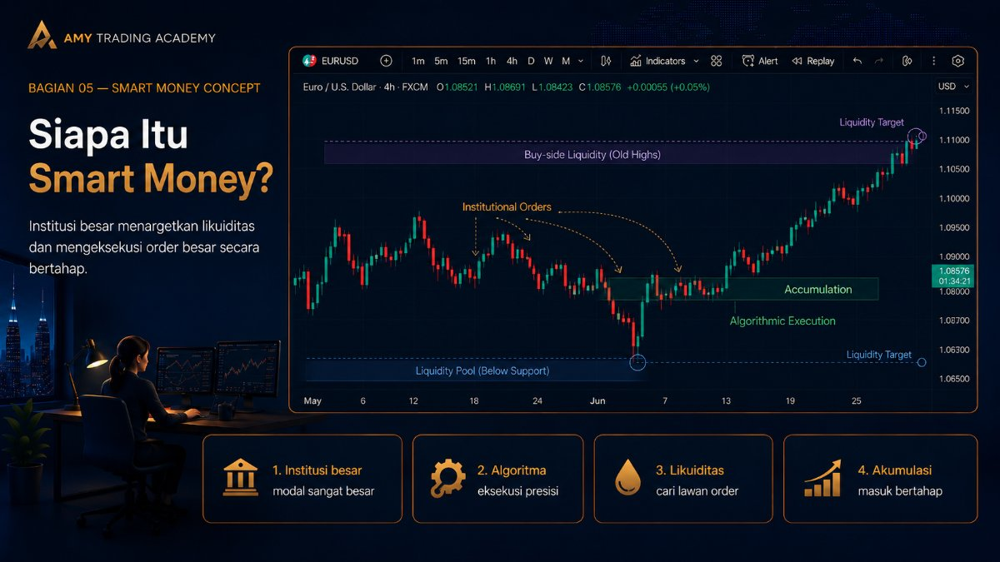
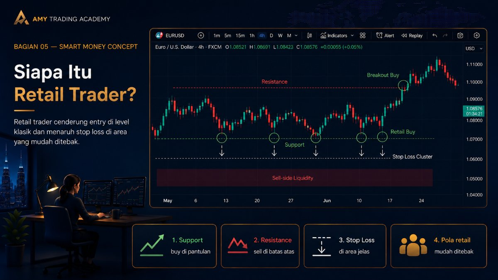
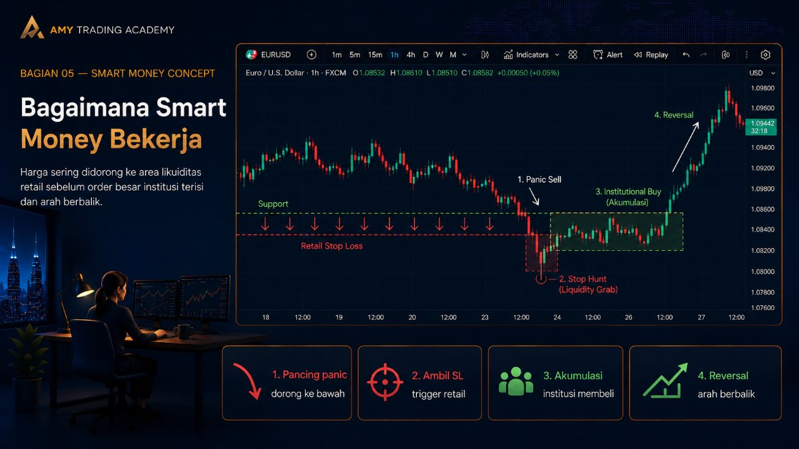
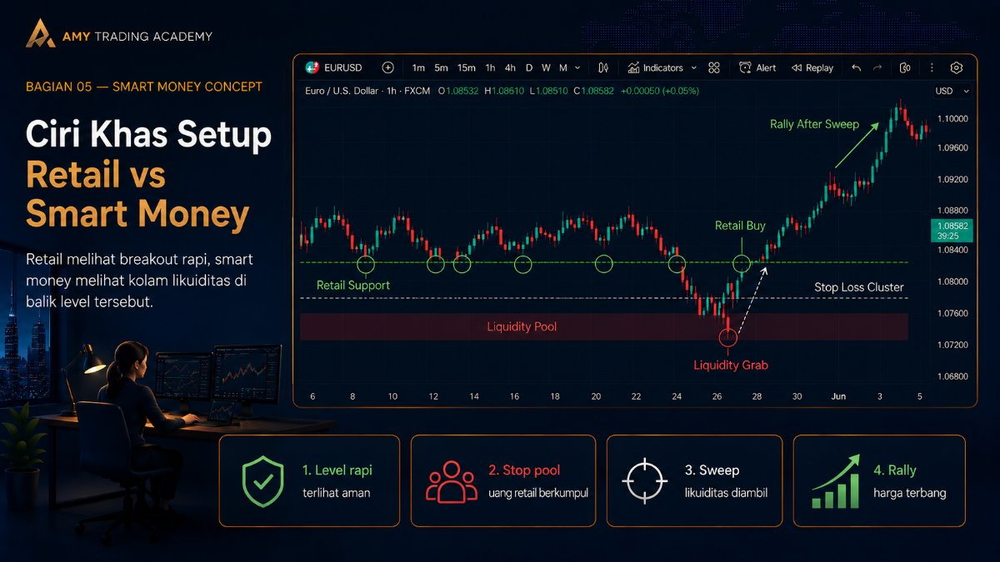
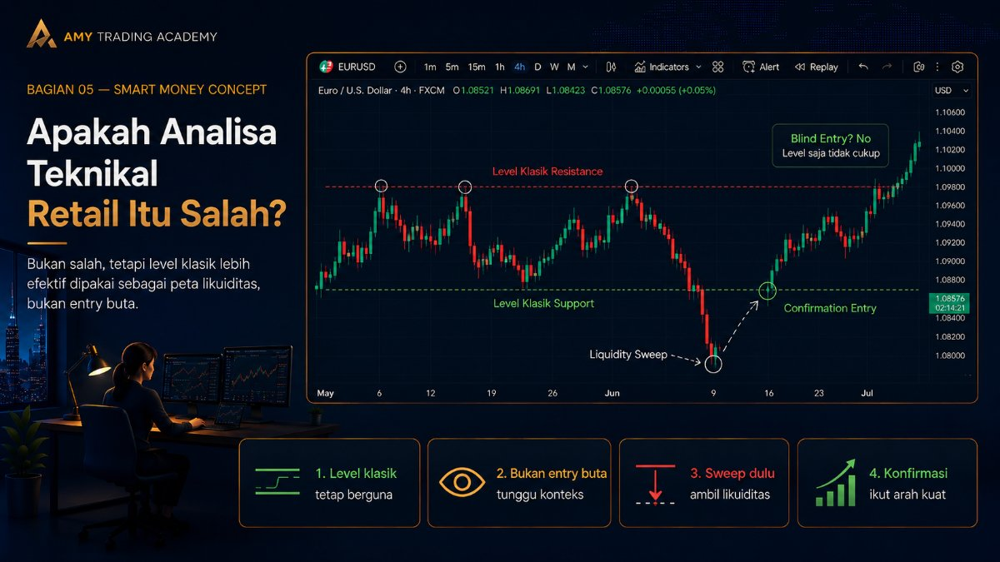

Smart Money vs Retail

Pernah nggak kamu ngerasa, "Wah, support-nya udah break, saatnya sell nih!" eh tapi tiba-tiba harga berbalik arah dengan kencang dan ngenain Stop Loss kamu? Atau, "Wah resistance tembus, buy buy buy!" tapi kemudian market malah drop gila-gilaan? Kalau kamu sering ngalamin ini, selamat datang di dunia Smart Money vs Retail.
Di materi Smart Money Concept (SMC), kita diajak untuk melihat market dengan kacamata yang berbeda. Bukan dari kacamata Retail Trader (seperti kita kebanyakan yang trading pakai uang kecil), tapi dari kacamata Smart Money atau institusi besar (bank, hedge fund, institusi finansial raksasa) yang punya dana triliunan.
Mengapa kita harus repot-repot memahami cara pandang Smart Money? Sederhana saja: karena merekalah yang menggerakkan market. Modal kita yang hanya ratusan atau ribuan dolar tidak akan mampu menggeser harga XAUUSD walau cuma 1 pip. Institusi besarlah yang punya bensin untuk itu.
Siapa Itu Retail Trader?

Retail trader adalah kita. Trader perorangan, yang buka akun di broker, deposit pakai uang pribadi, dan trading berdasarkan indikator, pola chart klasik (head and shoulders, double top, double bottom), atau garis Support dan Resistance.
Retail trader cenderung berpikir secara komunal, maksudnya, apa yang diajarkan di buku-buku trading klasik, itulah yang diyakini. "Buy di support, sell di resistance", "Buy kalau harga breakout resistance", "Pasang Stop Loss di bawah support". Semuanya terstruktur dan mudah ditebak.
Masalahnya, karena pola pikir retail ini sangat mudah ditebak, posisi uang mereka (liquidity) juga sangat mudah dilacak oleh pemain besar.
Siapa Itu Smart Money?
Smart Money adalah entitas raksasa di market. Mereka tidak trading pakai MetaTrader di HP sambil ngopi di kafe. Mereka menggunakan algoritma canggih dan order yang super besar.
Ketika Smart Money ingin membeli sebuah aset (misalnya emas) dalam jumlah puluhan triliun rupiah, mereka tidak bisa sekadar menekan tombol "Buy" satu kali. Kenapa? Karena kalau mereka beli langsung semuanya, harga akan melonjak secara tidak wajar dan mereka akan mendapatkan harga beli yang sangat buruk.
Agar mereka bisa membeli dalam jumlah besar dengan harga yang bagus, mereka butuh penjual dalam jumlah besar. Pertanyaannya, dari mana mereka bisa mendapatkan penjual dalam jumlah besar di waktu yang bersamaan?
Jawabannya: Dari Stop Loss para Retail Trader!
Bagaimana Smart Money Bekerja (Analoginya)

Coba bayangkan kamu adalah seorang tengkulak beras besar (Smart Money) yang mau beli 100 ton beras murah. Di pasar, harga beras normal. Tapi kamu tahu, banyak pedagang kecil (Retail) yang akan panik dan menjual berasnya kalau harga tiba-tiba anjlok sedikit melewati batas-batas psikologis mereka.
Jadi, kamu (tengkulak) sengaja menjual sedikit berasmu dengan harga murah untuk menjatuhkan harga sesaat. Para pedagang kecil panik melihat harga drop. "Wah jebol nih harga, jual jual!" teriak mereka. Mereka semua menjual berasnya karena takut rugi lebih besar (terkena Stop Loss).
Di saat pedagang kecil ini berbondong-bondong menjual karena panik, siapa yang menampung dan membeli semua beras mereka? Betul, kamu sang tengkulak besar! Setelah kamu berhasil memborong 100 ton beras di harga super murah berkat kepanikan mereka, barulah kamu menghentikan permainanmu, dan harga beras pun kembali meroket.
Itulah persisnya yang terjadi di chart!
Ciri Khas Setup Retail vs Setup Smart Money

Dalam chart, pola retail biasanya sangat "rapi" dan menggoda.
- Retail melihat: Sebuah support kuat yang sudah disentuh 3 kali. Mereka pasang buy limit di support itu, dan menaruh Stop Loss tepat di bawahnya.
- Smart Money melihat: Sebuah kolam uang (Liquidity Pool) besar di bawah support tersebut. Karena banyak Stop Loss (yang berarti order Sell) ngumpul di sana, Smart Money akan mendorong harga turun menembus support tersebut sejenak untuk memicu semua Stop Loss itu. Begitu Stop Loss tereksekusi, Smart Money menampungnya dengan order Buy besar mereka, lalu harga terbang tinggi.
Ingat ini baik-baik: Apa yang dianggap sebagai "Breakout" oleh Retail Trader, seringkali hanyalah "Liquidity Grab" (pengambilan likuiditas) oleh Smart Money.
Apakah Analisa Teknikal Retail Itu Salah?

Bukan berarti support, resistance, atau trendline itu salah total dan harus dibuang. Konsep-konsep itu tetap ada gunanya. Namun, di SMC, kita tidak menggunakan level-level itu sebagai tempat entry buta.
Kita menggunakan level-level "klasik" tersebut untuk menandai di mana para retail trader menaruh uang/Stop Loss mereka. Kita menunggu sampai harga menembus level tersebut (mengambil uang retail), dan barulah kita mencari peluang untuk ikut bersama Smart Money.
Ringkasan Konsep
Untuk bisa survive di market, kamu harus berhenti berpikir seperti mayoritas (Retail).
- Jangan mudah terjebak oleh breakout palsu.
- Sadari bahwa uang besarlah yang menggerakkan harga, bukan indikator RSI atau MACD kamu.
- Selalu tanyakan pada diri sendiri sebelum entry: "Apakah harga sudah mengambil likuiditas? Atau justru jangan-jangan SL aku yang bakal jadi likuiditas buat Smart Money?"
Dengan memahami perbedaan mendasar antara cara kerja Smart Money dan Retail, kamu sudah melangkah satu tahap lebih maju. Di bab-bab berikutnya, kita akan bedah lebih dalam bagaimana cara kita melacak "jejak kaki" Smart Money di chart supaya kita bisa nebeng profit bareng mereka.